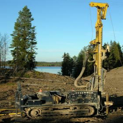
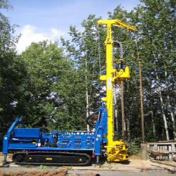
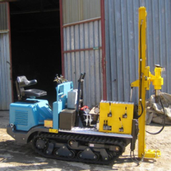

Plně hydraulická mobilní souprava na pásovém podvozku
RDBS
Technologie vrtání
- Jádrové rotační vrtání bez výplachu v profilech D 112–280 mm
- DTTO - s vodním / vzduchovým výplachem v profilech D 76–137 mm
- bezjádrové vrtání ponorným příklepovým kladivem se vzduchovým výplachem v profilech D 165–254 mm
Technické parametry – základní
- max. průměr pažení: 273 mm
- max. průměr vrtání: 324 mm
- max. hl. jádrového vrtu: 50 m
- max. hl. bezjádrového vrtu: 150 m
- přepravní rozměry: 7400 x 2050 x 2800 mm
- rozměry podvozku: 3800 x 1800 mm
- hmotnost: 7 t
- výška věže: 8,1 m
Další technické parametry
- Otáčky vřetene: 0 – 360 ot/min
- Přítlak vrtný: 37 kN
- Tah na vřetenu: 72 kN
- Kroutící moment: 13800 Nm
- Tah na vrátku: 25 kN, lano průměr 8 mm
- Délka lana: 80 m
- Pohon soupravy při vrtání: DEUTZ F4L-912
- Nosnost věže: 20 t
- Rok výroby: 2004
RDBS II
Technologie vrtání
- Jádrové rotační vrtání bez výplachu v profilech D 112–280 mm
- DTTO - s vodním / vzduchovým výplachem v profilech D 76–137 mm
- bezjádrové vrtání ponorným příklepovým kladivem se vzduchovým výplachem v profilech D 165–254 mm
Technické parametry – základní
- max. průměr pažení: 273 mm
- max. průměr vrtání: 324 mm
- max. hl. jádrového vrtu: 50 m
- >max. hl. bezjádrového vrtu: 150 m
- přepravní rozměry: 8000 x 2300 x 3000mm
- rozměry podvozku: 3600 x 2200 mm
- hmotnost: 9,5 t
- výška věže: 8,1 m
Další technické parametry
- Otáčky vřetene: 0 – 360 ot/min
- Přítlak vrtný: 37 kN
- Tah na vřetenu: 72 kN
- Kroutící moment: 13600 Nm
- Tah na man. vrátku: 18 kN, lano průměr 8 mm
- Délka lana: 80 m
- Tah na těžním vrátku: 100 kN, lano průměr 18 mm
- Délka lana: 80 m
- Pohon soupravy při vrtání: DEUTZ BF4L-914
- Nosnost věže: 20 t
- Rok výroby: 2014
RDBS MINI
Technologie vrtání
- Jádrové rotační vrtání bez výplachu v profilech D 76–175 mm
- DTTO - s vodním / vzduchovým výplachem v profilech D 76–137 mm
- bezjádrové vrtání ponorným příklepovým kladivem se vzduchovým výplachem v profilech D 95–140 mm
Technické parametry – základní
- max. průměr vrtání: 175 mm
- max. hl. jádrového vrtu: 10 m
- max. hl. bezjádrového vrtu: 10 m
- přepravní rozměry: 3.400 x 1.080 x 1.800 mm
- výška věže: 2,6m
Další technické parametry
- vrtná hlava Digga PDX 2
- Otáčky vřetene: 0 - 91 ot/min
- Kroutící moment: 2.331 Nm
- vrtná hlava RH 7
- Otáčky vřetene: 0 - 780 ot/min
- Kroutící moment: 407 Nm
- Přítlak vrtný: 15 kN
- Tah na vřetenu: 20 kN
- Pohon soupravy při vrtání: Kubota D 902
- Nosnost věže: 4 t
- Rok výroby: 2009